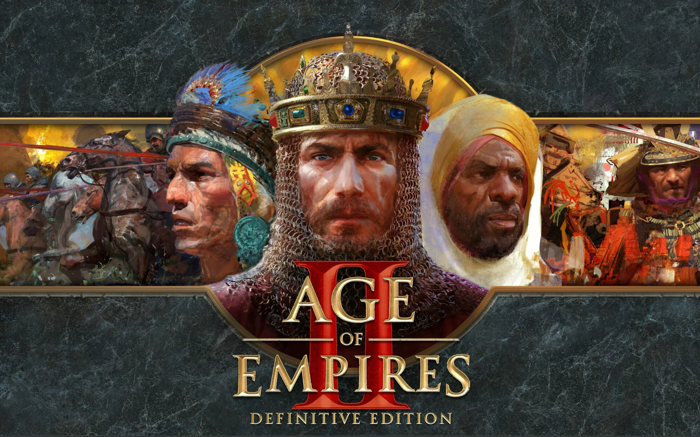
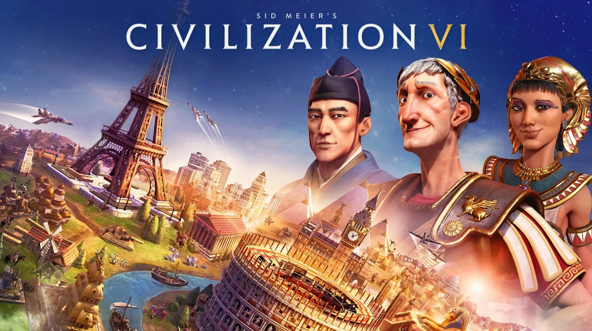
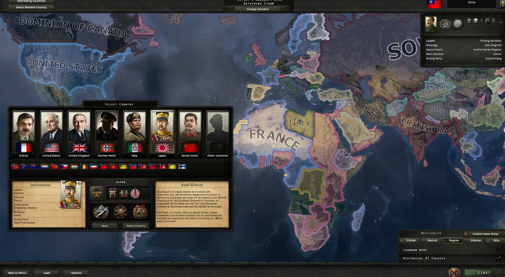
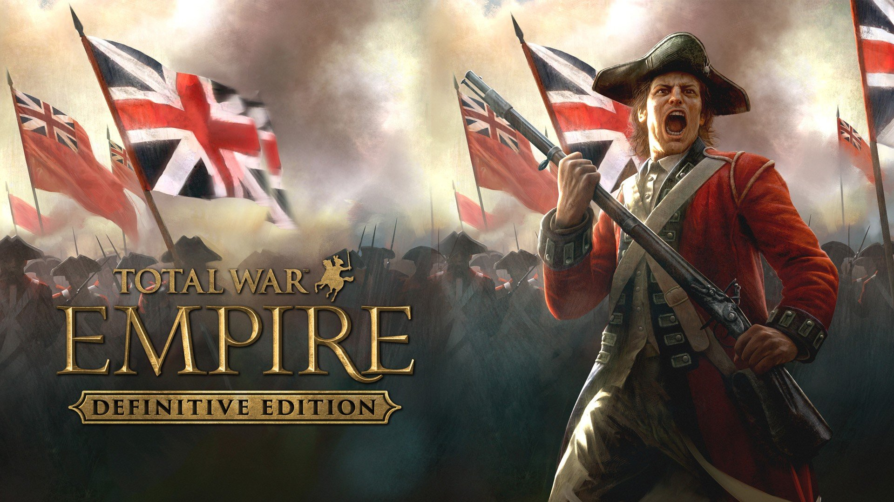
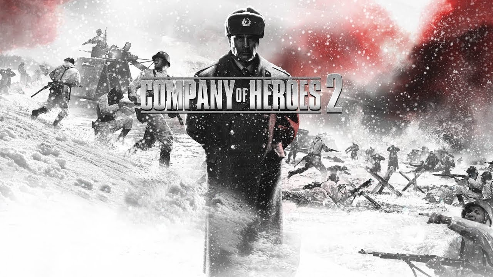

Изучение истории через видеоигры
Сделал Акобян Эрик — проект для 11 класса
Что такое стратегические игры
Стратегические игры — это жанр видеоигр, где игрок управляет государством, армией или цивилизацией, принимает решения по развитию экономики, технологий и войск, и участвует в дипломатии. Они часто используют реальные исторические события и личности.
Преимущества стратегических игр
- Развитие стратегического мышления
- Знакомство с историческими эпохами
- Изучение известных личностей
- Навыки планирования и принятия решений
- Повышение интереса к истории
Известные стратегии
Age of Empires II

Историческая стратегия, где игрок развивает цивилизацию, ведет войны и управляет ресурсами.
В игре представлены Иван Грозный и другие личности России XVI века. Позволяет изучать эпоху становления централизованного государства.
Civilization VI

Пошаговая глобальная стратегия, где игрок строит города, развивает науку, дипломатию и армию.
Российскую цивилизацию ведет Екатерина II, показывая политику и реформы XVIII века.
Hearts of Iron IV

Глобальная стратегия о Второй мировой войне. Управление армией, экономикой и дипломатией.
Представлены Иосиф Сталин и Георгий Жуков, что помогает изучать события 1941–1945 годов.
Total War: Empire

Стратегия XVIII века с крупными сражениями, дипломатией и экономикой.
Можно управлять Петром I и российской империей, изучая эпоху Петровских реформ.
Company of Heroes 2

Стратегия в реальном времени о Великой Отечественной войне, с исторической точностью.
Представлены Иосиф Сталин и Георгий Жуков, показывая действия военных лидеров и тактику войск.
Вывод
Стратегические видеоигры помогают изучать историю, погружая игрока в реальные события и эпохи.
Они показывают действия известных личностей, важные сражения и развитие государств.
Повышают интерес к предмету и делают обучение увлекательным.
Тем не менее, игры следует использовать вместе с учебниками и достоверными источниками.